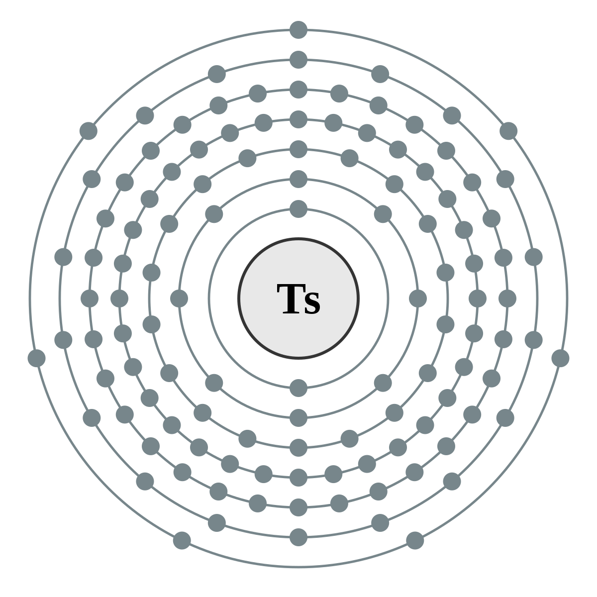

Tenesso
Inicialmente chamado “Ununséptio”, do latim "Ununseptium", seu nome temporário indicado pela IUPAC para o elemento, antes de ser formalmente nomeado.
Descoberto em 2010, Tennessine tem esse nome em reconhecimento a contribuição da região do tennessee, incluindo o Laboratório Nacional de Oak Ridge, a Universidade de Vanderbilt e a Universidade do Tennessee em Knoxville, na pesquisa de elementos superpesados, incluindo a produção e separação química de materiais alvo de actinídeos para a síntese de elementos superpesados.
Ainda não foram sintetizados compostos contendo este elemento, devido àsua vida extremamente curta e à falta de isótopos suficientemente estáveis para que suas propriedades químicas sejam estudadas na prática. Tudo o que se conhece são inferidos nas propriedades esperadas para o elemento, baseado nas propriedades periódicas e efeitos relativísticos.
Diferentemente dos elementos anteriores do grupo 17, os halogênios, o tenesso pode não exibir o comportamento químico comumdeste grupo. Por exemplo, os membros existentes do grupo normalmente aceitam um elétron para atingir a configuração eletrônica estável de um gás nobre, com oito elétrons em sua camada de valência. Esta capacidade enfraquece à medida que a massa atômica aumenta e o número atômico dos elementos do grupo aumenta. O tenesso seria o halogênio menos disposto a aceitar um elétron.
Você sabia?? O elemento se chama "Tennessine" em inglês.